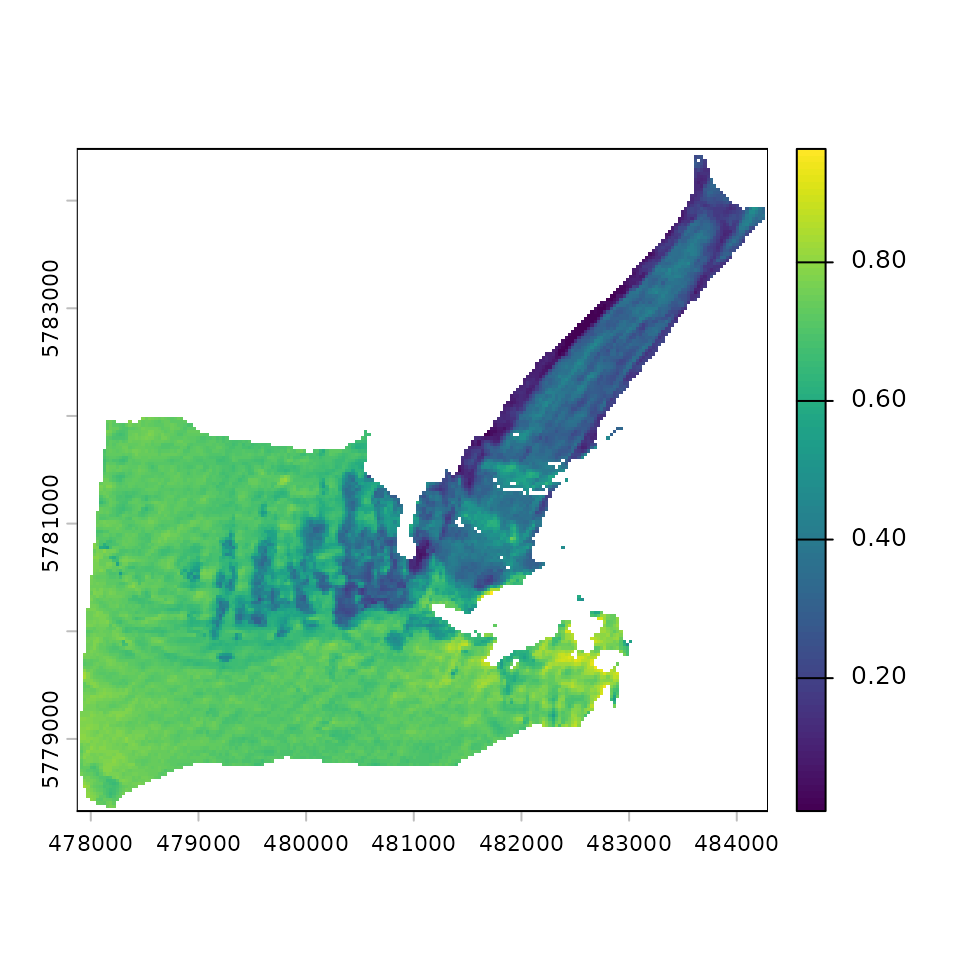

This document aims to introduce the users to the basic functionality
of SatRbedo. Here we use Sentinel-2 data from five spectral
bands at the Athabasca Glacier in Canada on 11 September 2020.
Step 1: Load the data for the area of interest
# Load the packages
library(SatRbedo)
library(terra)
#> terra 1.8.80
# Load the raw Sentinel-2 surface reflectance data
# Note: each spectral band was previously cut out to the extent of the area of interest and renamed
blue_SR <- system.file("extdata/athabasca_B02_20200911.tif", package = "SatRbedo") # blue band surface reflectance
green_SR <- system.file("extdata/athabasca_B03_20200911.tif", package = "SatRbedo") # green band surface reflectance
red_SR <- system.file("extdata/athabasca_B04_20200911.tif", package = "SatRbedo") # red band surface reflectance
NIR_SR <- system.file("extdata/athabasca_B8A_20200911.tif", package = "SatRbedo") # near-infrared band surface reflectance
SWIR1_SR <- system.file("extdata/athabasca_B11_20200911.tif", package = "SatRbedo") # shortwave-infrared band 1 surface reflectance
SWIR2_SR <- system.file("extdata/athabasca_B12_20200911.tif", package = "SatRbedo") # shortwave-infrared band 2 surface reflectance
# Load the DEM and the outline
# Note: the DEM was re-projected to the extent of the area of interest
dem <- system.file("extdata/athabasca_dem.tif", package = "SatRbedo")
outline <- system.file("extdata/athabasca_outline.shp", package = "SatRbedo")Step 2: Data pre-processing
# Transform the input data to SpatRaster and crop to the area of interest
dem <- terra::rast(dem)
blue <- preproc(grd = blue_SR, outline = outline)
green <- preproc(grd = green_SR, outline = outline)
red <- preproc(grd = red_SR, outline = outline)
nir <- preproc(grd = NIR_SR, outline = outline)
swir1 <- preproc(grd = SWIR1_SR, outline = outline)
swir2 <- preproc(grd = SWIR2_SR, outline = outline)Step 3: Topographic correction
SAA <- 164.8 # solar azimuth angle
SZA <- 48.9 # solar zenith angle
blue_corr <- topo_corr(blue, dem, SAA, SZA)
green_corr <- topo_corr(green, dem, SAA, SZA)
red_corr <- topo_corr(red, dem, SAA, SZA)
nir_corr <- topo_corr(nir, dem, SAA, SZA)
swir1_corr <- topo_corr(swir1, dem, SAA, SZA)
swir2_corr <- topo_corr(swir2, dem, SAA, SZA)Step 4: Estimation of broadband albedo after anisotropic correction
SAA <- 164.8 # solar azimuth angle
SZA <- 48.9 # solar zenith angle
VAA <- 90.9 # view azimuth angle
VZA <- 5.2 # view zenith angle
slope <- terra::terrain(dem, v = "slope", neighbors = 4, unit = "degrees")
aspect <- terra::terrain(dem, v = "aspect", neighbors = 4, unit = "degrees")
threshold <- snow_or_ice(green, nir)$th # threshold used to discriminate between snow and ice
broadband_albedo <- albedo_sat(
SAA, SZA, VAA, VZA,
slope, aspect, method = "fivebands",
blue = blue_corr$bands[[2]], green = green_corr$bands[[2]], red = red_corr$bands[[2]],
NIR = nir_corr$bands[[2]], SWIR1 = swir1_corr$bands[[2]], SWIR2 = swir2_corr$bands[[2]],
th = threshold
)
# Plot the results
plot(broadband_albedo[[6]])

Fig. 2 Broadband albedo
Where to go next?
You can check function documentation [here] and a more elaborate example using Landsat data [here].